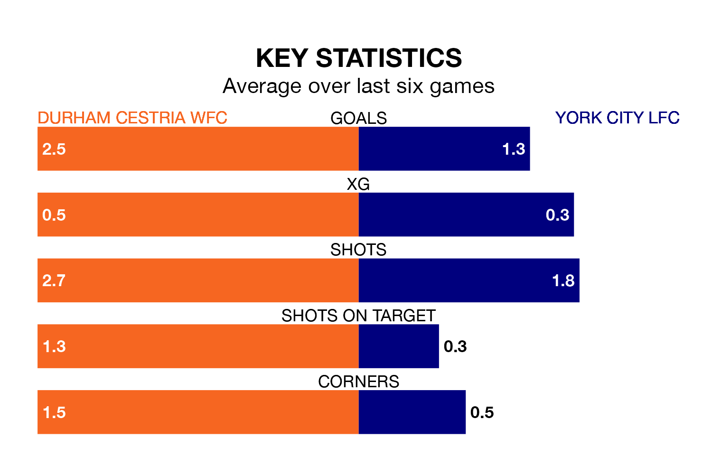

Mid-season relegation candidates York City LFC face a challenge away against high-flying Durham Cestria WFC on Sunday.
York City LFC are 11th in the Women's National League Division One – North table, and have picked up two wins and two draws in their 12 games to date.
Durham Cestria WFC, meanwhile, are top of the standings with 30 points, having won nine and drawn three of their first 16 matches.
With 29 goals in 16 games so far this season, Durham Cestria WFC are the league's joint-third-highest scorers with 1.8 goals per game. And they are conceding fewer than average, letting in 12 goals at a rate of 0.8 per game.
York City, meanwhile, are average scorers, with 1.6 goals per game. They have conceded 1.8 goals per game.
The home team are in fantastic form in the Women's National League Division One North, with five wins and a draw from their last six games.
With a win and a draw over that period, the visitors' form is much worse – they have taken four points from 18, compared to Durham Cestria WFC's 16.
In the last three years, Durham Cestria WFC and York City have played each other on three occasions. Durham Cestria WFC won all of them.
Their last meeting was on October 8, when Durham Cestria WFC won 4-0 away.
Durham Cestria WFC's last match was on March 3, a 3-2 win against Leeds Women.
York City lost 3-2 against Middlesbrough Women last time out, on February 4.
Updated: 09:34 (UTC), 08/03/24